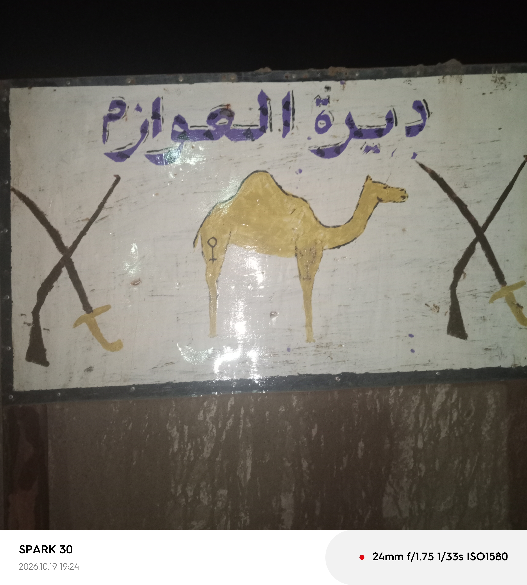

بوابة قرية العوازم بالدوم والتراث الأصيل
تأسست قرية العوازم بالدوم في عام 1909م، وتتميز بتاريخها العريق وعاداتها الأصيلة وتماسك أهلها في مختلف الولايات.
تشتهر القرية بكرم الضيافة، طقوس القهوة السودانية الأصيلة، والتكاتف الاجتماعي في كل المناسبات.
للتواصل والاستفسار عبر واتساب أو زيارة القرية، مرحباً بالجميع في ديرة العوازم.